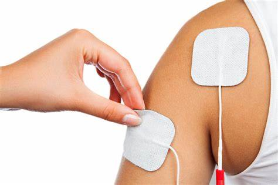

- Dor na lombar
- Dor no nervo ciático
- Tensão muscular, principalmente na região do pescoço
- Contraturas
- Síndrome do túnel do carpo
- Tendinite
- Fascite plantar
- Para que serve: a TENS é indicada para tratamento da dor no pós-operatório, fratura, e em caso de dores crônicas, como lombalgia, cervicalgia, no nervo ciático, na bursite, por exemplo. Embora não seja muito usado para este fim, também pode ser usado para combater o enjôo no pós-operatório.
- Contraindicações: esse tipo de eletroterapia não deve ser feito em caso de epilepsia porque pode desencadear uma crise convulsiva. Além disso, não deve ser colocado sobre o útero durante a gravidez, sobre a pele ferida, na boca e sobre a carótida.
- Para que serve: o ultrassom é indicado em caso de dores musculares provocadas por contraturas ou tensões, espasmos musculares, tendinites, bloqueios articulares e no tratamento de cicatrizes, osteoartrite, rigidez articular ou para diminuir o inchaço local.
- Contraindicações: esse tipo de eletroterapia não é indicado no caso de diminuição da sensibilidade local, gravidez, doença cardiovascular avançada, câncer de pele no local, circulação sanguínea prejudicada na região ou sobre feridas abertas ou áreas da pele com infecção, seios ou órgãos sexuais, por exemplo.
- Para que serve: a corrente russa é muito usada para o fortalecimento dos músculos, pois o seu efeito pode facilitar a contração muscular, principalmente em casos de fraqueza ou atrofia muscular. Além disso, pode ser indicado para tratamentos estéticos, facilitando a drenagem linfática e combatendo a flacidez.
- Contraindicações: esse tipo de terapia não deve ser feita em caso de marcapasso cardíaco, epilepsia, doença mental, sobre o útero durante a gravidez, em caso de trombose venosa profunda ou flebite recente, em caso de fratura recente.
- Para que serve: a laserterapia é indicada em caso de inchaço ou inflamações de articulações, tendões e ligamentos, tendões nos nervos, tendo bons resultados para controlar a dor e estimular a regeneração do tecido lesionado.
- Contraindicações: sobre os olhos, câncer, sobre o útero durante a gravidez, hemorragia no local de aplicação, pessoa com deficiência mental, que não colabora com as indicações do terapeuta.
- Para que serve: a FES é indicada quando é preciso favorecer o fortalecimento muscular em pessoas que não conseguem controlar o movimento, como em caso de paralisia, sequela de AVC, ou em atletas para melhorar o rendimento do treino por recrutar mais fibras que a contração normal.
- Contraindicações: esse tipo de tratamento não deve ser feito por pessoas com marcapasso, ou sobre o coração, seio carotídeo, em caso de espasticidade, se houver lesão no nervo periférico da região.
- Para que serve: a diatermia por ondas curtas é indicada em situações quando é necessário que o calor atinja camadas mais profundas, como em caso de lombalgia, dor ciática e outras alterações na coluna ou no quadril, por exemplo.
- Contraindicações: esse tipo de eletroterapia não deve ser feito por pessoas com marcapasso, fixadores externos ou internos na região onde deseja tratar, alterações de sensibilidade. Além disso, não deve ser feito na gravidez, câncer, tuberculose, trombose venosa profunda recente, em caso de febre, em crianças e adolescentes para não comprometer o crescimento ósseo.
- Para que serve: a fotoquimioterapia com psoraleno é indicada especialmente em caso de vitiligo, psoríase, eczema, líquen plano ou urticária pigmentosa.
- Contraindicações: esse tipo de terapia não deve ser feito em casos de câncer de pele melanoma ou outros, ou uso de outros remédios fotossensibilizantes.
Terapia Manual: A terapia manual é uma das áreas da fisioterapia onde o fisioterapeuta avalia o seu pasciente como um todo, tendo em conta sinais e sintomas como a dor, detectando disfunções do movimento e testando tecidos estruturais anatomicos. Após a avaliação , o fisioterapeuta realiza um programa de tratamento relacionado diretamente com os achados dessa valiação, tendo em conta os objetivos terapêuticos e os objetivos específicos do paciente. A terapia manual não é apenas uma especialidade que utiliza técnicas de mobilização passiva, já que os terapeutas especializados em terapia manual utilizam inúmeras técnicas e procedimentos específicos como a massagem de tecidos moles, a facilitação neuromuscular proprioceptiva, a reeducação postural, os exercícios para melhoria da força, coordenação, flexibilidade e estabilização segmentar, assim como manipulação, mobilização articular e mobilização neural.
Objetivos:
a) Identificar e corrigir disfunções de movimento nas articulações da coluna vertebral, membros superiores e membros inferiores.
b) Entender a relação entre as alterações do movimento normal e a disfunção dos componentes articulares, sistema nervoso e sistema circulatório.
c) Avaliar e corrigir desequilíbrios posturais e biomecânicos através de técnicas específicas, técnicas de mobilização dos tecidos e posturas de alongamento.
Liberação miofascial: A liberação miofascial é uma técnica de fisioterapia usada para aliviar a tensão e dor muscular e promover o relaxamento da musculatura, ajudando a prevenir e tratar lesões, como contraturas, tendinite, dor no nervo ciático, fascite plantar e tensão muscular no pescoço, por exemplo.
 A liberação miofascial atua diretamente na fáscia, que é o tecido que envolve os músculos, é deve ser feita pelo fisioterapeuta realizando um pouco de pressão na musculatura, o que pode ser feito com a mão ou usando acessórios específicos.
A liberação miofascial atua diretamente na fáscia, que é o tecido que envolve os músculos, é deve ser feita pelo fisioterapeuta realizando um pouco de pressão na musculatura, o que pode ser feito com a mão ou usando acessórios específicos.
Quando é indicada:
Essa técnica é mais comum de ser realizada em pessoas que praticam atividade física de alta intensidade ou com muita frequência, como praticantes de musculação ou crossfit, praticantes de atletismo ou de esportes de equipe.
Eletroterapia: A eletroterapia é um tipo de tratamento fisioterápico que consiste no uso de equipamentos que emitem correntes elétricas ou ondas sonoras, que não trazem risco para a saúde, e que tem como objetivo de ajudar no controle da dor, melhorar a irrigação sanguínea, ou acelerar a cicatrização da pele e a regeneração de outros tecidos.
Este tipo de tratamento pode ser indicado pelo fisioterapeuta nos casos de inchaço, dor, espasmos ou para fortalecimento muscular, por exemplo. Além disso, a eletroterapia pode ser usada em tratamentos estéticos como gordura localizada, celulite ou rugas e linhas de expressão, devendo ser realizada por um fisioterapeuta dermato-funcional.
Durante uma sessão de fisioterapia é comum o uso de pelo menos um equipamento de eletroterapia que deve ser indicado e usado por um fisioterapeuta, de forma individualizada, de acordo com a necessidade de cada pessoa.
Principais tipos de eletroterapia
1. TENS - Terapia por estimulação elétrica nervosa transcutânea
A terapia por estimulação elétrica nervosa transcutânea (TENS), consiste na emissão de correntes elétricas pulsadas que estimulam nervos e músculos através da pele, o que bloqueia os sinais de dor e aumenta a produção de substâncias fisiológicas do organismo que têm efeito analgésico, como as endorfinas
Para a aplicação, os eletrodos são colocados diretamente na pele, e a intensidade da corrente elétrica é ajustada para cada pessoa. Geralmente, o tratamento é realizado em dias alternados, e o número de sessões de individualizada de acordo com as necessidades de cada pessoa, geralmente durante 20 minutos.
2. Ultrassom
O aparelho de ultrassom utilizado na eletroterapia é capaz de emitir ondas sonoras que fornecem vibrações mecânicas que favorecem a regeneração dos tecidos afetados, pela estimulação do fluxo de sangue e aumento do metabolismo.
Esta técnica é realizada através do deslizamento do aparelho sobre à pele, após ter sido limpa e preparada com um gel, e o números de sessões é indicada pelo fisioterapeuta, de acordo com as necessidades de cada pessoa. O tempo de tratamento deve ser de no mínimo 5 minutos para cada área com 5 centímetros.
3. Corrente Russa

A corrente russa é uma técnica de eletroestimulação que utiliza eletrodos posicionados estrategicamente na região a ser tratada e emitem ondas elétricas de alta intensidade, mas que não causam dor, e atuam atua a nível muscular, sendo capaz de promover um aumento da força e do volume muscular, pois atua melhorando a circulação sanguínea e reduzindo a flacidez local.
4. Terapia a laser de baixa intensidade

Laser é um tipo de fototerapia capaz de produzir um efeito anti-inflamatório, analgésico, regenerador e cicatrizante dos tecidos. A aplicação do laser costuma ser feita pelo fisioterapeuta no local da dor, e a dose e número de sessões realizadas dependerá do tipo e gravidade da lesão.
5. FES - Estimulação elétrica funcional
A estimulação elétrica funcional (FES) é feita com um aparelho que emite correntes elétricas alternadas de baixa intensidade e leva à contração muscular de um grupo muscular paralisado ou extremamente fraco, como em caso de paralisia cerebral, hemiplegia ou paraplegia, por exemplo.
O tempo de contração muscular varia de acordo com a quantidade de músculos que precisam ser trabalhados, mas dura cerca de 10 a 20 minutos por áreas de tratamento.
6. Diatermia por ondas curtas
A diatermia por ondas curtas é um tipo de eletroterapia feito com um aparelho que emite radiações eletromagnéticas, que são transformadas em calor de forma profunda pelo corpo, ajudando a diminuir a inflamação, a rigidez muscular e a aliviar os espasmos nos músculos profundos do corpo.
Além disso, a diatermia por ondas curtas ajuda a regenerar tecidos lesionados, diminuir hematomas e favorecer a regeneração dos nervos periféricos.
7. Fotoquimioterapia com psoraleno - PUVA
A fotoquimioterapia com psoraleno (PUVA) é um tratamento combinado que consiste em primeiro em tomar uma substância chamada psoraleno, indicada pelo médico, e 2 horas depois, expor a área que será tratada à radiação ultravioleta. Também é possível aplicar psoraleno em forma de pomada ou misturar numa bacia com água, mantendo a parte a ser tratada imersa durante a exposição à radiação.